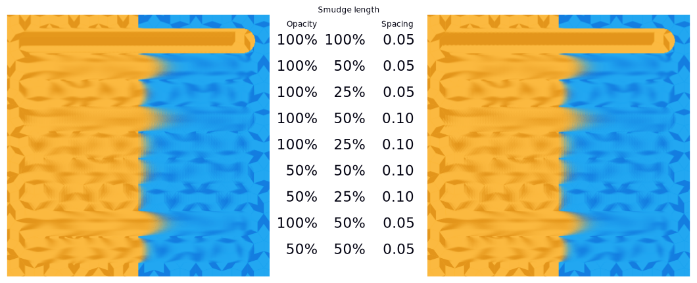
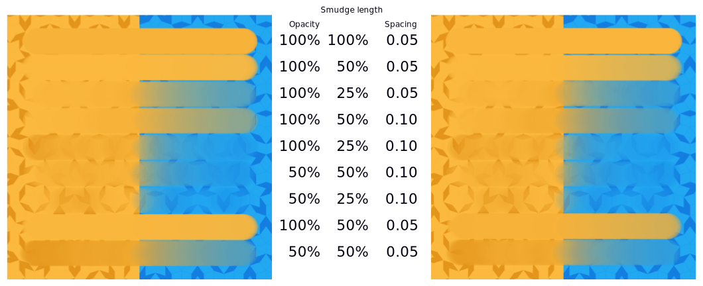
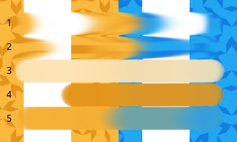

Color Smudge Brush Engine¶

The Color Smudge Brush is a brush engine that allows you to mix colors by smearing or dulling. A very powerful brush engine to the painter.
Options¶
Options Unique to the Color Smudge Brush¶
Color Rate¶
How much of the foreground color is added to the smudging mix. Works together with Smudge Length and Smudge Radius.
A variety of color smudge strokes in the Smear Mode with different opacities, smudge lengths and spacing. All are with 50% Color Rate. Left-hand set being the old algorithm and the right-hand set the new algorithm. The bottom two strokes are using the 加亮色彩 blending mode.¶
5.0 版新加入: The option Use new smudge algorithm greatly affects how the Color Rate works. With the old algorithm, the Color Rate will be affected by both smudge length and opacity, while with the new algorithm, Color Rate will only interact with Opacity.
At first glance, this may seem like it reduces nuance. But instead, the new algorithm simplifies brush creation, with it being far clearer which elements interact with Color Rate.
Same as figure above, but then in Dulling Mode.¶
Using the new algorithm, turning off the smudge length is all that's needed to make a brush that is similar to the Pixel Brush Engine. This is useful as a starting point for brushes that only need a little smudge.
When using the gradient mode, the Color Rate will control the colored brush tip instead of a flat color.
Blending modes are applied when the color part is composed onto the smudge part. This effectively means that color smudge brushes with a blending mode other than 正常 will be greatly affected by Color Rate in addition to Spacing and opacity.
Smudge Length¶
Affects smudging and allows you to set it to Sensors. Smudging is greatly affected by Spacing as well as Opacity. The former controls how many dabs are placed, and thus how many samples are made. This results in a smoother result for Smear Mode, and a more opaque result for Dulling Mode.
There are two major types:
- Smearing
Copies the area underneath the previous position of the brush onto the new position, taking opacity into account. This tends to result in a smear-effect.
Great for making brushes that have a very impasto oil feel to them. It's recommended to have a low spacing for Smear, as this will result in a less grainy looking smear.
A variety of color smudge strokes in the Smear Mode with different opacities, smudge lengths and spacing. Left-hand set being the old algorithm and the right-hand set the new algorithm. The bottom two strokes are using the 加亮色彩 blending mode, which does not have any meaningful effect, given the Color Rate is set to 0%.¶
- Dulling
Picks the color underneath the brush dab (using the Smudge Radius, if applicable), and first fills the whole dab with that before applying the color and the opacity. Named so because it dulls strong colors.
Using an arithmetic blending type, Dulling is great for more smooth type of painting. It's recommended to increase the spacing on dulling brushes as much as possible without the stroke looking choppy, as it speeds up the brush without losing smudge quality. The resulting stroke can be made stronger by increasing the smudge radius or the opacity.
Same as above, but then for the Dulling Mode.¶
- Strength
Affects how much the smudge length takes from the previous dab its sampling. This means that smudge length at 100% will never decrease, but smudge lengths under that will decrease based on Spacing and Opacity.
- Smear Alpha
Controls whether the transparency of the smeared pixels is taken into account when painting. This can be helpful to get a more opaque effect, as if laying down thick layers of paint, without losing the smudge effect.
Different strokes showing how smear alpha functions.¶
Smear Mode with Smear Alpha.
Smear Mode without Smear Alpha.
Dulling Mode with Smear Alpha.
Dulling Mode without Smear Alpha.
Dulling Mode without Smear Alpha, and Smudge Radius set to 100%.
- Use new smudge algorithm
5.0 版新加入.
The new smudge algorithm was initially introduced to allow lightness and gradient modes on the color smudge. But it allows for more: it is a little quicker, and it has a better separation between the Color Rate and the Smudge Length.
Common behaviors:¶
Unchecking the smudge length function sets smudge length to 100% (not 0.00).
Opacity: Below 50%, there is practically no smudging left: keep opacity over 50%.
Differences:¶
Spacing with Smearing: the lower the spacing, the smoother the effect, so for smearing with a round brush you may prefer a value of 0.05 or less. Spacing affects the length of the smudge trail, but to a much lesser extent. The strength of the effect remains more or less the same however.
Spacing with Dulling: the lower the spacing, the stronger the effect: lowering the spacing too much can make the dulling effect too strong (it picks up a color and never lets go of it). The length of the effect is also affected.
Both Smearing and Dulling have a "smudge trail", but in the case of Dulling, the brush shape is preserved. Instead, the trail determines how fast the color it picked up is dropped off.
Smudge Radius¶
The Smudge Radius allows you to sample a larger radius when using smudge-length in Dulling mode.
The slider is percentage of the brush-size. You can have it modified with Sensors.
A variety of brush strokes using 50% color rate, 50% smudge length and 50% opacity, but different smudge radii. The top stroke is in smear mode and thus smudge radius is not in effect.¶
5.0 版更變: It used to be possible to go beyond three time the size of the current brush. The smudge radius is now limited to the total size of the brush, but is also faster.
Overlay¶
Overlay is a toggle that determine whether the smudge brush will sample all layers (overlay on), or only the current one.
By default, the Color Smudge Brush only takes information from the layer it is on. However, if you want it to take color information from all the layers, you can turn on the Overlay mode.
Be aware though, that it does so by "picking up" bits of the layer underneath, which may mess up your drawing if you later make changes to the layer underneath.
Paint Thickness¶
5.0 版新加入.
This affects how strong the lightness modes affect the current color. Because the Color Smudge Brush smudges, what actually happens is that the lightness part is painted into a separate height map. This prevents the shadows and highlights of the current lightness brush tip from being mixed into the smudge, which would have resulted in all smudges becoming white or black. The height map is discarded when switching brush engines, layers or tools. Because this heightmap only exists for the layer currently being edited, lightness brushes and paint thickness cannot be used together with Overlay.
Image showing off different variations of Paint Thickness, with the top three strokes being in Smear Mode and the bottom three in Dulling Mode. Strengths are 100%, 50%, and 0% from top to bottom.¶
This has two modes, which change how the existing heightmap is interpreted:
- Overwrite (Smooth out when low) existing paint thickness
Here the lightness value of the brushstroke overrides the value that was there before, effectively smoothing out previous paint if the thickness value is low. The Opacity setting will cause it to blend with the previous paint height, but that will also bring down the color. This mode is useful for a brush that can paint with thickness, but can also smooth out existing paint if you wish.
- Paint over existing paint thickness (controlled by smudge length)
Here the lightness value blends with the previous values, based on the Smudge Length, as described above. It allows the kind of blending with previous paint height that Opacity allows in the Overwrite mode, but without affecting the color rate.
Image demonstrating the two modes, with the top strokes being Overwrite Existing Paint Thickness and the bottom strokes Paint over existing paint thickness. In both cases, a red stroke was laid with 100% paint thickness. Blue strokes were overlaid going from thin to thick. Notice how the Paint over existing type differs between 0% and 100% Smudge Length.¶
Hue, Saturation, Value¶
Identical to Hue, Saturation, Value in the Pixel Brush Engine, this will adjust the current foreground color before it is mixed in via Color Rate. Introduced because this brush engine used to have a small rounding error leading to iridescent smears, which was fixed. Artists who liked this effect can now emulate it by enabling Hue, enabling Fuzzy Dab and disabling Pressure and finally setting Strength to 40%.
Top: without hue variance, Bottom: with hue variance.¶
Hue, Saturation and Value don't affect brush-tips using the gradient mode.
Brush tips¶
The Color Smudge Brush has all the same Brush Tips as the Pixel Brush Engine!

Just remember that the smudge effects are weaker when a brush tip's opacity is lower, so for low-opacity brush tips, increase the opacity and smudge/color rates.
Scatter and other shape dynamics¶
The Color Smudge Brush shares a number of options with the Pixel Brush Engine.
However, because of the Smudge effects, the outcome will be different from the Pixel Brush. In particular, the Scatter option becomes much more significant.

A few things to note:
Scattering is proportional to the brush size. It's fine to use a scattering of 500% for a tiny round brush, but for bigger brushes, you may want to get it down to 50% or less.
You may notice the lines with the Smearing option. Those are caused by the fact that it picked up the hard lines of the rectangle.
For scattering, the brush picks up colors within a certain distance, not the color directly under the paintbrush:

Tutorial: Color Smudge Brushes¶
I recommend at least skimming over the first part to get an idea of what does what.
Smudging and blending¶
This part describes use cases with color rate off.
I won't explain the settings for dynamics in detail, as you can find the explanations in the Pixel Brush tutorial.
Smudging effects¶
For simple smudging:
Pick the Color Smudge Brush. You can use either Smearing or Dulling.
Turn off Color Rate
Smudge away

When using lower opacity brush tips, remember to "compensate" for the less visible effects by increasing both Smudge Rate and Opacity, if necessary to maximum.
Some settings for Smearing¶
For smoother smearing, decrease spacing. Remember that spacing is proportional to brush tip size. For a small round brush, 0.10 spacing is fine, but for mid-sized and large brushes, decrease spacing to 0.05 or less.
Some settings for Dulling¶
Lowering the spacing will also make the smudging effect stronger, so find a right balance. 0.10 for most mid-sized round brushes should be fine.
Unlike Smearing, Dulling preserves the brush shape and size, so it won't "fade off" in size like Smearing brushes do. You can mimic that effect through the simple size fade dynamic.
Textured blending¶
In this case, what I refer to as "Blending" here is simply using one of the following two dynamics:
Rotation set to Distance or Fuzzy
- And/or Scatter:
For most mid-sized brushes you will probably want to lower the scatter rate to 50% or lower. Higher settings are okay for tiny brushes.
Note that Scatter picks colors within a certain distance, not the color directly under the brush (see Brush Tips).
Optional: Pile on size and other dynamics and vary brush tips. In fact, the Color Smudge Brush is not a blur brush, so smudging is not a very good method of "smooth" blending. To blend smoothly, you'll have better luck with:
Building up the transition by painting with intermediate values, described later
Or using the "blur with feathered selection" method that I'll briefly mention at the end of this tutorial.
I've tried to achieve smooth blending with Color Smudge Brush by adding rotation and scatter dynamics, but honestly they looked like crap.
However, the Color Smudge Brush is very good at "textured blending":

Basically you can paint first and add textured transitions after.
Coloring¶
For this last section, Color Rate is on.
Layer options¶
Before we get started, notice that you have several possibilities for your set-up:
Shading on the same layer
Shading on a separate layer, possibly making use of alpha-inheritance. The brush blends with the transparency of the layer it's on. This means:
If the area underneath is more of less uniform, the output is actually similar as if shading on the same layer
But if the area underneath is not uniform, then you'll get fewer color variations.
Shading on a separate layer, using Overlay mode. Use this only if you're fairly sure you don't need to adjust the layer below, or the colors may become a mess.

Issue with transparency¶
The Color Smudge Brush blends with transparency. What this means is that when you start a new, transparent layer and "paint" on this layer, you will nearly always get less than full opacity.
Basically:
It may look great when you're coloring on a blank canvas
But it won't look so great when you add something underneath

The solution is pretty simple though:
- Make sure you have the area underneath colored in first:
With tinting, you already have the color underneath colored, so that's done
For painting, roughly color in the background layer first
Or color in the shape on a new layer and make use of alpha-inheritance
For the last solution, use colors that contrast highly with what you're using for best effect. For example, shade in the darkest shadow area first, or the lightest highlights, and use the color smudge brush for the contrasting color.

Soft-shading¶
Suppose you want more or less smooth color transitions. You can either:
Color Rate as low as 10% for round brushes, higher with non fully opaque brush tips.
Or set the Smudge Rate as low as 10% instead.
Or a combination of the two. Please try yourself for the output you like best.
Optional: turn on Rotation for smoother blending.
Optional: turn on Scatter for certain effects.
Optional: fiddle with Size and Opacity dynamics as necessary.

This remains, in fact, a so-so way of making smooth transitions. It's best to build up intermediate values instead. Here:
I first passed over the blue area three times with a red color. I select 3 shades.
I color picked each of these values with the Ctrl +
 shortcut, then used them in succession.
shortcut, then used them in succession.

Painting: thick oil style¶
Many of the included color smudge brush presets produce a thick oil paint-like effect. This is mainly achieved with the Smearing mode on. Basically:
- Smearing mode with high smudge and color rates
Both at 0.50 are fine for normal round brushes or fully opaque predefined brushes
Up to 1.00 each for brushes with less density or non fully-opaque predefined brushes
Add Size/Rotation/Scatter dynamics as needed. When you do this, increase smudge and color rates to compensate for increased color mixing.

One thing I really like to do is to set different foreground and background colors, then turn on . Alternatively, just paint with different colors in succession (bottom-right example).

Here's some final random stuff. With pixel brushes, you can get all sorts of frill designs by using elongated brushes and setting the dynamics to rotation. You won't get that with Color Smudge Brushes. Instead, you'll get something that looks more like... yarn. Which is cool too. Here, I just used oval brushes and .

Painting: Digital watercolor style¶
When I say "digital watercolor", it refers to a style often seen online, i.e. a soft, smooth shading style rather than realistic watercolor. For this you mostly need the Dulling mode. A few things:
Contrary to the Smearing mode, you may want to lower opacity for normal round brushes to get a smoother effect, to 70% for example.
Vary the brush tip fade value as well.
When using Scatter or other dynamics, you can choose to set smudge and color values to high or low values, for different outcomes.

Blurring¶
You can:
Paint then smudge, for mostly texture transitions
Or build up transitions by using intermediate color values
If you want even smoother effects, well, just use blur. Gaussian blur to be exact.

And there you go. That last little trick concludes this tutorial.